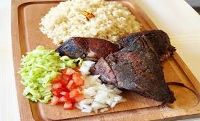

Accueil
Garba

Description
Un plat ivoirien populaire à base de semoule de manioc et de thon.
Ingrédients
- Semoule de manioc (Attiéké)
- Thon
- Tomates
- Oignons
- Huile, sel, poivre
Étapes
- Cuire le thon et préparer la sauce
- Faire réchauffer l'attiéké
- Servir le thon avec l'attiéké et la sauce